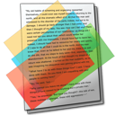

New App: Overlays!
2015.08.22 22:59

It started as an app I wrote for myself. I shared an older Windows version some time back, but I’ve updated it, and added a MacOS version now to. Read more on it’s app page. Read More…The New Testament, In OpenDyslexic
2013.01.03 19:56
It was originally going to just be just a gift for my wife, but so many wanted one, I worked on making a version I was comfortable selling: a thinner, better, more professional looking New Testament with a table of contents. Read More…
Increasing Support for OpenDyslexic
2012.10.15 20:58
Wow! It's been an amazing few weeks! Right after Instapaper added support for OpenDyslexic, emails and comments poured in. Interview requests filled my inbox. Downloads went through the roof. And thousands of people found a free way to help with their dyslexia symptoms.
Read More…
Read More…
OpenDyslexic mentions and uses
2012.09.13 15:40
OpenDyslexic has been around for less than a year, downloaded over 12,500 times, and it has already found many uses:
WordSmith: An excellent new word processor for the professional writer using MacOS, WordSmith has an optional theme, “Irving,” that uses OpenDyslexic as the typeface (and which I'm using to write this). http://plowsoftware.com/wordsmith/styles/
iPhoneRuler has BytaFont theme for jailbroken iPhones to change the default iOS font to OpenDyslexic. In it’s first 6 weeks of release, it has seen 6,419 installs, and has become the #31 most appreciated typeface. http://www.iphoneruler.net/2012/08/open-dyslexic-font.html
The open source iPad ebook reader, Dox on Box, uses OpenDyslexic with it’s innovative colorization techniques to make reading ebooks on the iPad easier. https://github.com/snarshad/doxonbox
The Magic Judge Wiki recommends using OpenDyslexic for Judge exams. http://wiki.internationalmagicjudges.net/...
Both openWeb and OpenDyslexic receive a mention here: http://helpforstrugglingreaders.blogspot.com/2012/02/helpful-apps-for-dyslexia-and-related.html
OpenDyslexic, thanks to your help, is now almost fully complete. Font smoothing on Windows is still being worked out, but on platforms written by sane people (Every platform but Windows), that is not an issue.
Edit: As you can tell, if you are reading this right now, this list became just a small list in the span of a week! I really need to write an update post. As soon as I'm not overwhelmed with work, I will. Thank you all. 2012/09/13
WordSmith: An excellent new word processor for the professional writer using MacOS, WordSmith has an optional theme, “Irving,” that uses OpenDyslexic as the typeface (and which I'm using to write this). http://plowsoftware.com/wordsmith/styles/
iPhoneRuler has BytaFont theme for jailbroken iPhones to change the default iOS font to OpenDyslexic. In it’s first 6 weeks of release, it has seen 6,419 installs, and has become the #31 most appreciated typeface. http://www.iphoneruler.net/2012/08/open-dyslexic-font.html
The open source iPad ebook reader, Dox on Box, uses OpenDyslexic with it’s innovative colorization techniques to make reading ebooks on the iPad easier. https://github.com/snarshad/doxonbox
The Magic Judge Wiki recommends using OpenDyslexic for Judge exams. http://wiki.internationalmagicjudges.net/...
Both openWeb and OpenDyslexic receive a mention here: http://helpforstrugglingreaders.blogspot.com/2012/02/helpful-apps-for-dyslexia-and-related.html
OpenDyslexic, thanks to your help, is now almost fully complete. Font smoothing on Windows is still being worked out, but on platforms written by sane people (Every platform but Windows), that is not an issue.
Edit: As you can tell, if you are reading this right now, this list became just a small list in the span of a week! I really need to write an update post. As soon as I'm not overwhelmed with work, I will. Thank you all. 2012/09/13